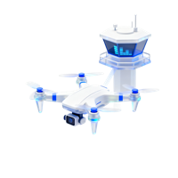

无人机 AI 智慧巡查平台融合无人机硬件与 AI 技术，打造全流程智能低空巡查方案，集成多机适配、AI 识别及大语言模型能力，构建事件闭环管理体系，实现低空巡查自动化、智能化、高效化，满足多领域低空巡检需求，是低空经济落地核心载体。
搭载先进AI识别算法，实时分析画面并精准告警，替代人工检查，高效识别违建、火情等各类异常
告警实时推送，小程序快速处理；严格遵循闭环流程，提升治理效能
集成本地化大模型，依托RAG技术搭建本地知识库，本地化部署保障数据安全，支持离线使用
强大任务中心支持多模式飞行与精细化操控，自动生成各类报告，实现全场景业务闭环
PC + 小程序双端，核心管控 + 移动处置全覆盖
适配多类型无人机及全品类负载，兼容各类低空飞行基础设施，统一管理构建设施一张网


算法库包括九大类场景80+算法，覆盖多个行业业务领域，支持根据业务场景灵活定制
| 场景 | 算法能力 | |||||
|---|---|---|---|---|---|---|
| 通用场景 | 人形识别 | 车辆识别 | 二轮车识别 | 三轮车识别 | 船只识别 | 水库识别 |
| 道路识别 | 水域识别 | 林区识别 | 文字OCR识别 | 烟识别 | 火识别 | |
| 红外人形识别 | 红外车辆识别 | 红外船只识别 | ||||
| 工地场景 | 安全帽反光衣识别 | 工程车辆（七合一）识别 | 路面工程设备识别统计 | 建筑材料堆放 | 挖掘机识别 | 渣土车识别 |
| 水泥罐车识别 | 吊车识别 | 重型卡车识别 | 叉车识别 | 装载机识别 | 烟雾识别 | |
| 火点识别 | 渣土车未遮盖篷布识别 | 违规施工识别 | ||||
| 城管场景 | 垃圾包识别 | 违规铺设太阳能板识别 | 小吃车违规经营识别 | 非法垂钓识别 | 人群聚集识别 | 阳光房违建识别 |
| 人物摔倒异常行为识别 | 违规吸烟识别 | 人员离岗识别 | 违规安装太阳能热水器识别 | 蓝顶违建识别 | 站点垃圾满溢识别 | |
| 违规摆摊识别 | 建筑垃圾乱堆识别 | 未戴安全帽识别 | 污水排放识别 | |||
| 水利场景 | 河道淤积识别 | 水面漂浮物识别 | 人员涉水识别 | 违规放养识别 | 堤边绿障识别 | 水面违规搭建识别 |
| 水面油污识别 | 非法垂钓识别 | 河道边违规搭建识别 | 红外船只识别 | 水面垃圾识别 | 水面植物识别 | |
| 岸边垃圾识别 | ||||||
| 消防场景 | 消防登高面标志识别 | 消防登高面违法占用识别 | 火灾预警—火点识别 | 火灾预警—烟雾识别 | 秸秆焚烧识别 | |
| 林业场景 | 松线虫害识别 | 违规露营识别 | 绿化病害识别 | 林区分割 | 垃圾暴露识别 | |
| 交通场景 | 区域车辆识别统计 | 区域人员识别统计 | 违停车辆识别 | 交通事故识别 | 道路拥堵识别 | |
| 能源场景 | 光伏板热斑检测 | 电力线路缺陷识别 | 管道泄漏检测 | 输电塔异物识别 | 绝缘子破损识别 | |
| 农业场景 | 病虫害识别 | 作物长势分析 | 农田边界分割 | 杂草识别 | 灌溉异常识别 | |
无人机视角小模型算法库，覆盖9大业务领域80+算法场景
从数据采集到智能分析，全链路算法服务交付
无人机多源数据采集
清洗、标注、增强
场景化模型定制训练
云端/边缘端灵活部署
检测报告与告警推送
反馈闭环迭代升级
高精度、低延迟、强泛化的算法性能